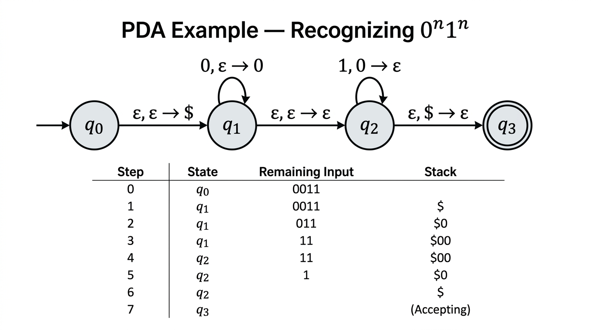

Pushdown Automata — COMP0003 Automata¶
Lecture-style notes. A pushdown automaton (PDA) extends a finite automaton with an infinite stack, giving it the ability to recognise languages that require unbounded memory — such as \(\{0^n 1^n\}\). PDAs are nondeterministic by default, and unlike the DFA/NFA equivalence, deterministic PDAs are strictly weaker than nondeterministic ones. The languages recognised by (nondeterministic) PDAs are precisely the context-free languages.
1. COMPLETE TOPIC SUMMARIES¶
From finite automata to pushdown automata¶

{kind=link}
A DFA has no memory beyond its current state. The pumping lemma showed this is insufficient for languages like \(\{0^n 1^n \mid n \geq 0\}\) — you need to "count" an arbitrary number of \(0\)s and later verify the same count of \(1\)s.
A pushdown automaton solves this by attaching an infinite stack to an NFA:
- The machine can push symbols onto the stack and pop symbols off the top.
- The stack provides unbounded storage, but access is restricted to the top element only (last-in, first-out).
- Transitions can depend on the current state, the next input symbol (or \(\varepsilon\)), and the top of the stack.
Formal definition¶
A (nondeterministic) pushdown automaton is a 6-tuple \(M = (Q, \Sigma, \Gamma, \delta, q_0, F)\) where:
| Component | Meaning |
|---|---|
| \(Q\) | Finite set of states |
| \(\Sigma\) | Input alphabet (finite) |
| \(\Gamma\) | Stack alphabet (finite; may differ from \(\Sigma\)) |
| \(\delta\) | Transition function: \(\delta : Q \times \Sigma_\varepsilon \times \Gamma_\varepsilon \to \mathcal{P}(Q \times \Gamma_\varepsilon)\) |
| \(q_0 \in Q\) | Start state |
| \(F \subseteq Q\) | Set of accept states |
Here \(\Sigma_\varepsilon = \Sigma \cup \{\varepsilon\}\) and \(\Gamma_\varepsilon = \Gamma \cup \{\varepsilon\}\).
The transition function maps a (state, input symbol or \(\varepsilon\), stack-top symbol or \(\varepsilon\)) triple to a set of (new state, symbol to push or \(\varepsilon\)) pairs. The set-valued output is what makes the PDA nondeterministic.
Transition notation¶
A single transition is written:
meaning: read input symbol \(a\) (or \(\varepsilon\) for no input), pop \(X\) from the stack (or \(\varepsilon\) for no pop), and push \(Y\) onto the stack (or \(\varepsilon\) for no push).
Special cases:
| Transition | Effect |
|---|---|
| \(a,\; X \to Y\) | Read \(a\), pop \(X\), push \(Y\) (replace top) |
| \(a,\; \varepsilon \to Y\) | Read \(a\), push \(Y\) (push only, no pop) |
| \(a,\; X \to \varepsilon\) | Read \(a\), pop \(X\) (pop only, no push) |
| \(\varepsilon,\; \varepsilon \to Y\) | No input read, push \(Y\) |
| \(\varepsilon,\; X \to \varepsilon\) | No input read, pop \(X\) |
Formal acceptance (computation)¶
PDA \(M = (Q, \Sigma, \Gamma, \delta, q_0, F)\) accepts input \(w = w_1 w_2 \cdots w_n\) (each \(w_i \in \Sigma_\varepsilon\)) if there exist:
- a sequence of states \(r_0, r_1, \ldots, r_n\) with \(r_i \in Q\), and
- a sequence of stack contents \(s_0, s_1, \ldots, s_n\) with \(s_i \in \Gamma^*\),
satisfying:
- \(r_0 = q_0\) and \(s_0 = \varepsilon\) — start in the start state with an empty stack.
- For each \(i = 0, \ldots, n-1\): \((r_{i+1}, b) \in \delta(r_i, w_{i+1}, a)\) where \(s_i = ax\) and \(s_{i+1} = bx\) for some \(x \in \Gamma^*\) — each step follows a valid transition, modifying only the top of the stack.
- \(r_n \in F\) — end in an accept state.
Note: the stack does not need to be empty at the end of computation (though specific PDA designs may enforce this).
Example 1 — recognising 0^n 1^n (n ≥ 0)¶
Strategy: Push a bottom-of-stack marker \(\$\), then push a \(0\) for each \(0\) read. When \(1\)s start, pop a \(0\) for each \(1\). Accept when \(\$\) is popped (stack is empty and all \(1\)s matched).
States: \(q_0\) (start), \(q_1\) (reading \(0\)s), \(q_2\) (matching \(1\)s), \(q_3\) (accept).
Transitions:
| From | To | Label | Meaning |
|---|---|---|---|
| \(q_0\) | \(q_1\) | \(\varepsilon,\; \varepsilon \to \$\) | Push bottom marker |
| \(q_1\) | \(q_1\) | \(0,\; \varepsilon \to 0\) | Read \(0\), push it |
| \(q_1\) | \(q_2\) | \(\varepsilon,\; \varepsilon \to \varepsilon\) | Guess: done with \(0\)s |
| \(q_2\) | \(q_2\) | \(1,\; 0 \to \varepsilon\) | Read \(1\), pop a \(0\) |
| \(q_2\) | \(q_3\) | \(\varepsilon,\; \$ \to \varepsilon\) | Pop \(\$\), accept |
Trace of \(w = 0011\):
The input is expanded with \(\varepsilon\)-steps: \(\varepsilon, 0, 0, \varepsilon, 1, 1, \varepsilon\).
| Step | Read | State after | Stack (top → bottom) | Action |
|---|---|---|---|---|
| 0 | — | \(q_0\) | (empty) | Start |
| 1 | \(\varepsilon\) | \(q_1\) | \(\$\) | Push \(\$\) |
| 2 | \(0\) | \(q_1\) | \(0\; \$\) | Push \(0\) |
| 3 | \(0\) | \(q_1\) | \(0\; 0\; \$\) | Push \(0\) |
| 4 | \(\varepsilon\) | \(q_2\) | \(0\; 0\; \$\) | Guess: switch to matching |
| 5 | \(1\) | \(q_2\) | \(0\; \$\) | Pop \(0\) |
| 6 | \(1\) | \(q_2\) | \(\$\) | Pop \(0\) |
| 7 | \(\varepsilon\) | \(q_3\) | (empty) | Pop \(\$\), accept |
All three acceptance conditions are met: started in \(q_0\) with empty stack, followed valid transitions, ended in accept state \(q_3\).
Example 2 — equal number of 0s and 1s¶
Idea: Use the stack to track the imbalance between \(0\)s and \(1\)s. Push \(+\) when a \(1\) is read and the top is not a \(-\) (or stack is \(\$\)); push \(-\) when a \(0\) is read symmetrically. If the top matches the opposite sign, pop instead.
More concretely, one standard construction:
- Push \(\$\) initially.
- On reading \(0\): if top is \(+\), pop it (a \(1\) is now balanced); otherwise push \(-\).
- On reading \(1\): if top is \(-\), pop it (a \(0\) is now balanced); otherwise push \(+\).
- Accept when \(\$\) is on top and input is exhausted (pop \(\$\) and go to accept state).
The stack height represents the current imbalance; it returns to just \(\$\) exactly when \(\#_0 = \#_1\).
Nondeterminism in PDAs¶
A PDA is nondeterministic: for a given (state, input, stack-top) triple, \(\delta\) may return multiple possible (state, push) pairs. The PDA accepts if any computation branch reaches an accept state.
This is fundamentally the same concept as NFA nondeterminism, but now it also applies to stack operations — the PDA can "guess" what to do with the stack.
Deterministic vs nondeterministic PDAs¶
This is a critical difference from finite automata:
| Finite automata | Pushdown automata |
|---|---|
| DFA \(\equiv\) NFA (same power) | DPDA \(\subsetneq\) NPDA (strictly different power) |
Deterministic PDAs (DPDAs) are strictly less powerful than nondeterministic PDAs (NPDAs). There exist context-free languages that no DPDA can recognise — for example, \(\{ww^R \mid w \in \{0,1\}^*\}\) (palindromes over \(\{0,1\}\)) requires nondeterministic guessing of the midpoint.
The class of languages recognised by NPDAs is exactly the context-free languages (equivalently, the languages generated by context-free grammars).
Context-free languages and the bigger picture¶
Every regular language can be recognised by a DFA, which is a special case of a DPDA (just ignore the stack). But PDAs can also recognise non-regular languages like \(\{0^n 1^n\}\).
The equivalence \(\text{CFL} = \text{NPDA languages}\) is proved by showing:
- CFG → PDA: every context-free grammar can be converted to a PDA (next lecture).
- PDA → CFG: every PDA can be converted to a context-free grammar (next lecture).
2. EXAM-STYLE QUESTIONS (WITH MODEL ANSWERS)¶
Q1 — Formal definition¶
Question. Give the formal definition of a nondeterministic PDA, specifying each component and the type of the transition function.
Model answer. A PDA is a 6-tuple \((Q, \Sigma, \Gamma, \delta, q_0, F)\) where \(Q\) is a finite set of states, \(\Sigma\) is the input alphabet, \(\Gamma\) is the stack alphabet, \(\delta : Q \times \Sigma_\varepsilon \times \Gamma_\varepsilon \to \mathcal{P}(Q \times \Gamma_\varepsilon)\) is the transition function, \(q_0 \in Q\) is the start state, and \(F \subseteq Q\) is the set of accept states. Here \(\Sigma_\varepsilon = \Sigma \cup \{\varepsilon\}\) and \(\Gamma_\varepsilon = \Gamma \cup \{\varepsilon\}\).
Q2 — Design a PDA for 0^n 1^n¶
Question. Design a PDA that recognises \(L = \{0^n 1^n \mid n \geq 0\}\). List the states, transitions, and trace the computation on \(w = 001\).
Model answer. States: \(q_0, q_1, q_2, q_3\) (accept: \(q_3\)). Transitions: \(q_0 \xrightarrow{\varepsilon,\, \varepsilon \to \$} q_1\); \(q_1 \xrightarrow{0,\, \varepsilon \to 0} q_1\); \(q_1 \xrightarrow{\varepsilon,\, \varepsilon \to \varepsilon} q_2\); \(q_2 \xrightarrow{1,\, 0 \to \varepsilon} q_2\); \(q_2 \xrightarrow{\varepsilon,\, \$ \to \varepsilon} q_3\). On \(w = 001\): push \(\$\), push \(0\), push \(0\), guess switch, pop one \(0\) for the \(1\), but one \(0\) remains — no valid continuation to \(q_3\). So \(001 \notin L\) (no accepting branch).
Q3 — Interpret a transition label¶
Question. A PDA transition is labelled \(\varepsilon,\; 0 \to \varepsilon\). What does this mean in terms of input consumption and stack operations?
Model answer. The machine reads no input (\(\varepsilon\) in the input position), pops \(0\) from the top of the stack (the "read \(0\) from stack" part), and pushes nothing (\(\varepsilon\) in the push position). Net effect: the top \(0\) is removed from the stack without consuming any input character.
Q4 — DPDA vs NPDA¶
Question. Explain why deterministic PDAs are strictly less powerful than nondeterministic PDAs. Give an example of a language recognised by an NPDA but not by any DPDA.
Model answer. For DFAs and NFAs, the subset construction shows they are equivalent. No analogous construction exists for PDAs because the stack cannot be "merged" across nondeterministic branches — each branch may have a different stack contents, and there is no finite way to track all possibilities simultaneously. The language \(\{ww^R \mid w \in \{0,1\}^*\}\) (even-length palindromes) requires guessing the midpoint to switch from pushing to popping; a DPDA cannot make this guess deterministically since the midpoint is not marked in the input.
Q5 — Acceptance conditions¶
Question. State the three conditions for a PDA to accept a string. Does the stack need to be empty at the end?
Model answer. A PDA accepts \(w\) if there exist a state sequence \(r_0, \ldots, r_n\) and stack sequence \(s_0, \ldots, s_n\) such that: (1) \(r_0 = q_0\) and \(s_0 = \varepsilon\) (start in start state with empty stack); (2) each step follows a valid transition — \((r_{i+1}, b) \in \delta(r_i, w_{i+1}, a)\) with \(s_i = ax\) and \(s_{i+1} = bx\); (3) \(r_n \in F\) (end in an accept state). The stack does not need to be empty — acceptance is by final state, though many PDA designs deliberately empty the stack as part of their logic.
3. MUST-KNOW KEY POINTS¶
- PDA = NFA + infinite stack. Transitions depend on state, input symbol (or \(\varepsilon\)), and stack top (or \(\varepsilon\)).
- 6-tuple: \((Q, \Sigma, \Gamma, \delta, q_0, F)\) with \(\delta : Q \times \Sigma_\varepsilon \times \Gamma_\varepsilon \to \mathcal{P}(Q \times \Gamma_\varepsilon)\).
- Transition label \(a, X \to Y\): read \(a\), pop \(X\), push \(Y\) (any of these can be \(\varepsilon\)).
- Acceptance: start in \(q_0\) with empty stack; follow valid transitions; end in \(F\). Stack need not be empty.
- Bottom-of-stack marker \(\$\): common design pattern to detect when the stack is empty.
- Nondeterminism: PDA accepts if any branch reaches an accept state (same as NFA).
- DPDA \(\subsetneq\) NPDA: unlike DFA \(\equiv\) NFA. Palindromes (\(ww^R\)) need nondeterminism.
- NPDAs recognise exactly the context-free languages (equivalence with CFGs proved in later lectures).
4. HIGH-PRIORITY TOPICS¶
🔴 Must Know¶
- Formal 6-tuple definition and what each component is.
- Transition function type: \(\delta : Q \times \Sigma_\varepsilon \times \Gamma_\varepsilon \to \mathcal{P}(Q \times \Gamma_\varepsilon)\).
- Reading transition labels: \(a, X \to Y\) means read \(a\), pop \(X\), push \(Y\).
- Three acceptance conditions (start state + empty stack, valid transitions, end in \(F\)).
- Design a PDA for \(\{0^n 1^n\}\) with bottom-of-stack marker — states, transitions, and trace.
- DPDA \(\neq\) NPDA in power (contrast with DFA = NFA).
- NPDAs \(\leftrightarrow\) context-free languages.
🟡 Important¶
- Equal 0s and 1s PDA design: track imbalance on the stack.
- Nondeterministic "guessing": the PDA guesses the right moment to switch modes (e.g. stop pushing, start popping).
- \(\varepsilon\)-transitions on input: the input string is "expanded" with \(\varepsilon\) slots for transitions that consume no input.
- Stack starts empty; acceptance does not require the stack to be empty (but designs often enforce it).
🟢 Useful but Lower Priority¶
- Formal proof that every DFA is a special-case PDA (ignore the stack).
- The class of DPDA languages (deterministic context-free languages) and its relationship to LR parsing.
- Variations: acceptance by empty stack vs acceptance by final state (equivalent with minor modifications).
5. TOPIC INTERCONNECTIONS & BIGGER PICTURE¶
- Pumping lemma → PDAs: the pumping lemma showed \(\{0^n 1^n\}\) is not regular; PDAs are the exact upgrade needed — the stack provides the unbounded counting that DFAs lack.
- PDAs ↔ CFGs: the next lectures prove these are equivalent. CFG → PDA simulates derivations on the stack; PDA → CFG creates variables \(A_{q_i q_j}\) for state-pair paths.
- Chomsky hierarchy: regular (DFA/NFA) \(\subset\) context-free (PDA/CFG) \(\subset\) decidable (Turing machines). Each level gains a more powerful memory model: none → stack → tape.
- Compiler design: PDAs (especially DPDAs) underpin parser technology. LR and LL parsers are essentially deterministic PDAs that process context-free grammars.
- Stack as a data structure: the same LIFO discipline appears in function call stacks, expression evaluation, and balanced-parenthesis checking — all closely related to context-free languages.
6. EXAM STRATEGY TIPS¶
- Draw the PDA diagram with labelled arrows. Include the bottom-of-stack marker \(\$\) — forgetting it is a common mistake.
- Trace tables are your friend: columns for step, input read, state, stack contents. They make acceptance arguments rigorous.
- When asked to design a PDA, describe the strategy in words first ("push 0s, then pop for each 1") before writing transitions.
- Transition labels: always write all three parts (\(a, X \to Y\)). Writing just "\(0\)" on an arrow is ambiguous — specify what happens to the stack.
- For DPDA vs NPDA questions, the go-to example is palindromes (\(ww^R\)): the midpoint cannot be detected without nondeterministic guessing.
- If asked about acceptance, explicitly state all three conditions — don't just say "reaches an accept state" without mentioning the start configuration and valid transitions.
- Connect back to regular languages: a PDA with an unused stack is just an NFA, so every regular language is context-free. This is a one-line argument worth memorising.
These notes cover Automata Lecture 7 material on pushdown automata. The equivalence between PDAs and context-free grammars is covered in subsequent lectures.